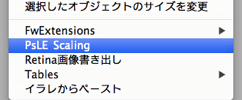
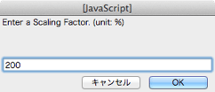

これは何？
オブジェクトの拡大縮小に合わせて、Photoshopライブエフェクトを拡大縮小できる拡張機能です。
動作環境とライセンス
Fireworks CS3以上 / MITライセンス
使い方
拡大縮小するオブジェクトを選択します（複数可）。
Fireworksでコマンドを実行します。

拡大縮小率を入力するようダイアログが表示されますので、値を入力します（単位は%）。

拡大縮小率に合わせて、オブジェクトとともにPhotoshopライブエフェクトが拡大縮小されます。
拡大縮小率を入力する時に、数値の後ろに「/（半角スラッシュ）」を入力すると、Photoshopライブエフェクトのみの拡大縮小ができます。

仕様
- 幅・高さとも同じ比率での拡大縮小になります。
- Photoshopライブエフェクトを拡大縮小し数値に小数点が出た場合、四捨五入しています。
- この拡張機能でテキストオブジェクトの拡大縮小を行うと、オブジェクトが扁平します。「変形のリセット」をすれば扁平自体は解消されますが、位置がずれてしまいます。こちらのコマンドを使うと、左上位置はそのままに扁平を解消できます。
- バグではありませんが、スクリプトでPhotoshopライブエフェクトが適用されているオブジェクトを走査しているため、選択しているオブジェクトが多い・グループ化のネストが深い・多数のフィルタを適用しているオブジェクトが多い場合など、Fireworks自体が落ちる可能性があります。
- Photoshopライブエフェクト（ドロップシャドウ・ストローク）のみを適用した50個のオブジェクトに対して実行した場合、約1.5秒かかります。（iMac(27-inch, Mid 2010) Core i7 / mem 16GB / HDD）